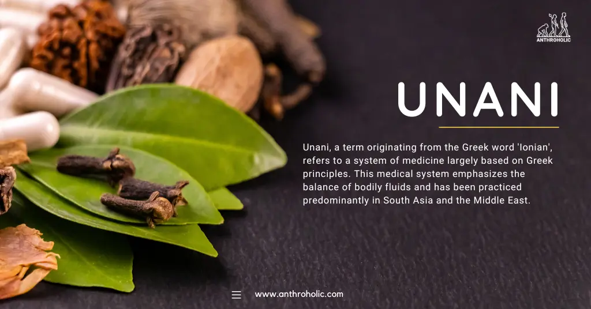
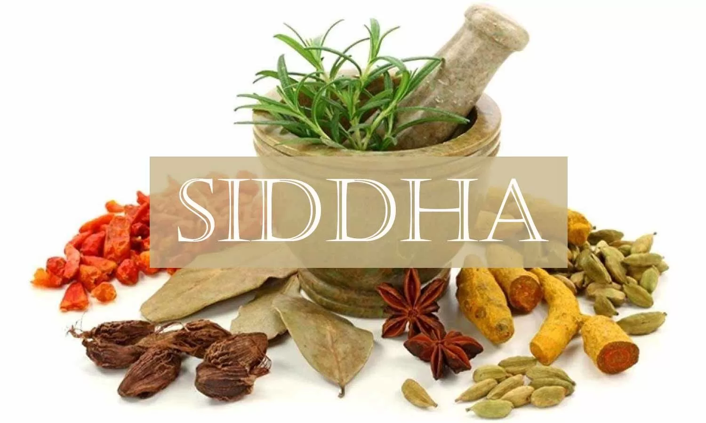
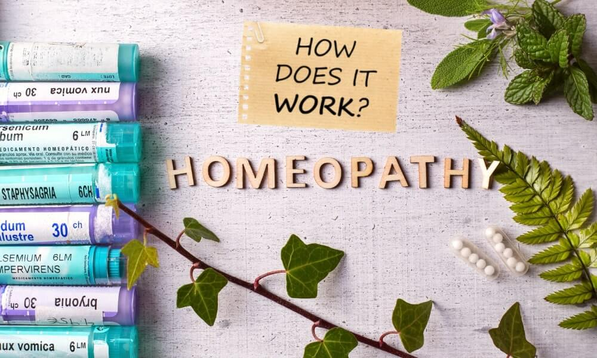

The Virtual Herbal Garden is dedicated to bridging the ancient wisdom of herbal medicine with the digital age. Our goal is to promote awareness, learning, and accessibility to India's rich tradition of herbal practices rooted in the AYUSH systems — Ayurveda, Yoga, Unani, Siddha, and Homeopathy.
Whether you are a student, a researcher, or an enthusiast of natural remedies, our platform empowers you to explore, search, and understand herbal plants and their uses — all from the comfort of your screen.
AYUSH stands for Ayurveda, Yoga, Unani, Siddha, and Homeopathy — five traditional systems of medicine practiced in India and recognized by the Government. These systems emphasize holistic healing, focusing on preventive care, natural remedies, and well-being.
Focuses on balancing body systems using diet, herbs, detox, and lifestyle practices.
Combines physical postures, breathing exercises, and meditation for holistic wellness.

Based on the concept of the four humors, focusing on natural healing and balance.

Ancient Tamil medical system based on alchemy, herbs, and spiritual practices.

Uses highly diluted substances to trigger the body's natural healing response.